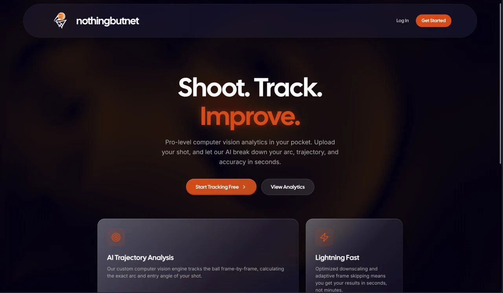

Nothing But Net
A basketball shot tracker. Upload a clip and it works out your shot arc, release angle and whether it went in.
What I built
- A computer-vision pipeline in Python and OpenCV that finds the ball in each frame and fits the shot's arc.
- The React web app and an Express + MongoDB API, with accounts and paid tiers through Stripe.
- A native Android companion app in Kotlin for recording shots.
React 19 · Python · OpenCV · Express · MongoDB · Kotlin